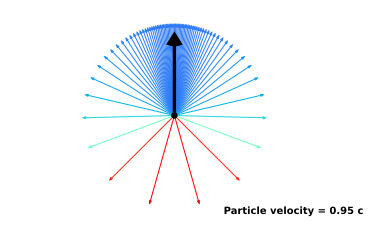

Newtonian physics serves as an excellent approximation at low speeds, accurately predicting the behaviour of objects in our everyday world, but it gives way to different effects as we approach the speed of light. It turns out that an observer moving at high speed relative to another observer would notice lengths contract, time run slower, and events that were simultaneous to the other observer, no longer simultaneous to them. There is however one thing that remains constant, the speed that light travels relative to each observer is the same. To understand how all this works, we have to redefine our understanding of time and space, with special relativity.
Special relativity is vital for particle, nuclear, and astrophysics. It is needed for calculating the power output when it comes to nuclear fusion and fission, or measuring the speed of galaxies and stars from the relativistic effects on the frequency of their emitted light. It is also needed for precision time keeping for the likes of the fast moving GPS satellites which needs it for accurately calculating positions.
To understand how special relativity works we will need to first look at our classical understanding of the world, and using the fact that light somehow always moves at constant speed relative to everything, we will see how we must change our laws of physics for this to be true. Which in turn will lead to many interesting consequences. We will start with an overview of all the main concepts, leaving the mathematical details and deeper insights for later chapters.
Classical Addition of Velocities
Diagram, showing the speed of cannon ball from two different perspectives, (top) is from someone's perspective who is on the truck who sees the cannon at rest with the road moving backwards, the cannonball is shot and is moving forward. (bottom) is from someone's perspective who is at rest on the road and sees the truck and cannon moving relative to them, when the cannonball is shot it looks like it is moving forward faster for them, as it seems to have the cannonballs velocity plus that of the truck it was shot from.
Let us imagine that a truck is moving forward on a road at a constant speed of 20 m/s (meters per second), on the top of that truck, is a cannon that fires a cannonball in the same direction the truck is moving. The ball travels at a speed of 300 m/s relative to the truck. Classically to find out how fast the ball is moving relative to the road, we add the speed of the truck and the speed of the ball together: 20 + 300 = 320 m/s. So we find the ball is moving at a speed of 320 m/s relative to the road, and this is what we observe. So in classical physics, velocities directly add, the ball relative to the road would move at the speed of the ball relative to the truck plus the truck 's speed relative to the road.
But this turns out to just be a very good approximation for objects in our normal day life which we are used to seeing, which are moving much slower than the speed of light (which is roughly 300 000 000 m/s), but we will get to this later. For now we will explain more about the classical view, so that you will be able to see more clearly the differences when it comes to special relativity.
Inertial Reference Frame
Diagram of a \hyperlink{Reference-frame
A reference frame can be thought of as an abstract coordinate system. The origin of its axis, its orientation, and its scale are specified by a set of points in space. The purpose of it is to provide a standardised means of measuring and describing the coordinates of objects within that frame at any instant of time.
An inertial reference frame, is one that is not undergoing any acceleration. You can tell if you are being accelerated, as you will feel a force, take for example, in an accelerating car you will feel the chair being accelerated into you, with your body slightly lagging behind in the acceleration, and its this basic principle for how accelerometers measure acceleration as shown in the diagram.
Diagram of a ball, attached to the walls of a box by springs, with the ball centred in the box in the inertial frame, i.e. with no acceleration (left), and in an non-inertial frame (right) where the box is now accelerating to the right, The ball lags behind as the box accelerates.
Classical Reference Frames
To see how to swap between reference frames in special relativity we will first have to introduce what the classical swapping between two reference frames look like. To help us understand this, we will use a system of a moving platform, like we find on a treadmill. The two frames of reference will be that of the treadmill's platform and the room in which it is in.
Diagram of 3d view of treadmill platform, with two rats and three hanging rocks.
To illustrate swapping between frames classically, We will look at a setup of two rats on a treadmill as shown in Figure \ref{fig: 3d conveyor belt}, with three rocks hanging above the platform, at rest relative to the room. Both rats start under the same rock, one runs to a rock positioned in the forward direction of the treadmill, and the other runs to an equally distanced rock to the side, they then return to the starting rock. Here the platform can be seen as the medium in which the rats move. Both rats travel at the same constant speed relative to the platform, with the platform at a lower speed than the rats to allow them to get to the rocks.
If the platform is at rest, they will return to the starting rock at the same time. But if the treadmill is turned on and the platform is now moving, the rats will now have to also work against the movement of the platform to get to the rocks, this will lead to different distances the rats have to travel, and as a result the rats get back to the starting rock at different times. The figures \ref{fig: rat with moving platform} and \ref{fig: rat platform reference frame} show what the direction of movement of the rats and rocks look like in each reference frame.
\begin{paracol}{2}
Rats on moving platform, from room's \hyperlink{Reference-frame
\switchcolumn
Rats on moving platform, from platform's \hyperlink{Reference-frame
\end{paracol}
In the room's reference frame we have the platform moving backwards, the rat moving straight ahead will have impedance to its movement but after it turns around it now has a boost from the platform to get back to the starting rock, were as the sideways moving rat will have to go sideways and also balances out the backwards pull of the platform to keep a perpendicular movement towards the hanging rocks. This gives different lengths of paths depending on the reference frame, as shown in figures \ref{fig: rat with moving platform} and \ref{fig: rat platform reference frame}. It also gives different times for the rats to return to the starting rock. This is what we would expect and see with this classical example of frame swapping, but next we will look at whether we can have the same sort of frame swapping when it comes to light travelling in two different frames of reference, and the notion of a universal rest frame referred to as the aether.
The Aether
A diagram showing the \hyperlink{aether
In the 1800's, the theory was that light was a wave and therefore would need a medium for it to travel through that filled the vacuum of space, called "the luminiferous aether", and that light would travel at a constant speed relative to this aether, like how the rats in the previous section moved at a constant speed relative to the medium of the treadmill's platform.
An experimental setup by Michelson and Morley, shown in Fig. \ref{fig: Michelson_morley}, was devised to measure earth's movement through the aether \cite{EtherExperiment}, by measuring how it affected the speed of light in different directions, when observed in earth's reference frame.
A diagram showing the Michelson-Morley experiment, (we can take the part of the paths between the the beam splitter and two mirrors to be analogous to the case of the paths in the previous rat and treadmill diagrams)
It did this by splitting a single light beam into two perpendicular paths, that are then reflected back to be recombined and sent towards a light detector. By rotating the whole interferometer setup, the two light paths could be aligned either parallel or perpendicular to the Earth’s motion through the presumed aether.
They reasoned that if the speed of light was constant with respect to the proposed aether, that just as in the rat experiment from the previous section, the split light beams would recombine at different times. From the previous section the room is analogous to the room the experiment was carried out on earth, the treadmill's platform is analogous to the aether and the rats analogous to the light.
However, when Michelson and Morley performed the experiment, they found no difference in travel time to the detector for both paths, indicating that there was no difference in the speed of light in any direction in earth's reference frame. hence no dependence of lights speed on the supposed aether. This null result seriously discredited the aether theories and ultimately led to the proposal by Einstein in 1905 that the speed of light (in a vacuum) is a universal constant and independent on motion of observer or source. And to allow for us to have this universal speed of light (in a vacuum), it will require us to change our ideas of how time and positions are perceived by different observers.
Speed of Light
The experiments showed light does not have a medium that it travels at a constant velocity relative too, but instead travels at a constant velocity in a vacuum in all reference frames, independent of how fast the source of that light is moving in the frame, e.g. a moving truck's head lights. Light only moves slower in objects such as glass due to being impeded by the interactions between it and the material it is travelling through.
Light itself moves extremely fast compared to any other everyday speeds we are used to (roughly 300 000 000 m/s, it can travel the diameter of the world in the blink of an eye). This is why we do not notice any delay in things we see around us in everyday life, though we should keep in mind that there is this delay, e.g. the light we see from the sun was emitted by it eight minutes ago for it to reach us now, and the further an object is located from us, the further back in time we are seeing it because of this delay.
A diagram, showing light emitted from a truck in two different \hyperlink{Reference-frame
When we look at the same truck setup as the previous sections, but in a vacuum this time, where the cannon firing a cannonball is swapped for the headlights emitting light, it gives the same speed of light when measured relative to the truck or the road, but how can this be true?
For this to be true, we need a new way of thinking about velocity addition, since the velocities of objects have to be added in a way that is consistent with the requirement that the speed of light is constant, but also give approximate classical addition at speeds of objects at much less than the speed of light, like we observe with the cannon and truck. Since the speed of the light depends only on the units of time and positions, the only way to correct for this is to have the measured positions and times of objects transform differently when swapping between reference frames than the classical way. This is what we will talk about next.
For the curious, it was the \href{https://scienceready.com.au/pages/determination-of-speed-of-light}{experiment by Ole Rømer} that showed that showed that light travelled at a finite speed rather than being instantaneously emitted and received.
Positions and Time
Time Dilation
Diagram showing the the extra distance light travels in the road's frame with truck moving
Let us imagine a simple clock, as shown in Figure \ref{fig: truck clock}, made of a light pulse moving back and forth between two mirrors on a moving truck, with a mirror on the truck’s floor and on the roof directly above it, we will keep time by taking a tick of this clock to be when the light travels from one mirror to the other mirror and back again. For an observer in the truck, they will see the light go straight up and down between the mirrors, but an observer stationary relative to the road will see not just the light travelling up and down but also with the direction of the truck as well, hence it will travel a longer distance. But since the distance travelled by the light in the moving frame is longer and the speed of light is constant, we are only left with the possibility that the perceived travel time of the light has to be longer in this reference frame, i.e. the clock ticks slower to the observer on the road watching the moving truck. How much it is moving slower, can be solved using ratio of the lengths of paths in each frame as they are shown in the diagram. This difference in the flow of time will later lead to more odd consequences. The slowing of the ticking is also the same for any type of clock, and if you were to play a movie on the truck, it would take a longer amount of time for it to play through from the roads reference frame, it is the actual time itself being slowed down.
Also the closer the truck goes to the speed of light, the bigger the difference in how fast time flows relative to the truck 's time (this can be seen as a longer horizontal stretch in the path taken for the light from the perspective of someone standing still on the road).
Simultaneity
A diagram showing how the two \hyperlink{event
Let us imagine a truck in its rest frame, with a light bulb in the middle and mirrors on the front and back walls, now if the light bulb gives off a pulse of light, the light will travel from the centre of the truck to reach the mirrors simultaneously and back to the light bulb also simultaneously.
But the observer on the road watching the truck drive past will see the light bulb simultaneously emit light in both directions and also simultaneously return to the bulb again. However, to do this the light reflects off each wall's mirrors at different times in this frame as shown in the diagram. This is because the speed of light is the same for both directions but the truck is moving, meaning the back of the truck is moving towards where the bulb was when the pulse was emitted making the distances travelled shorter, and due to the front wall moving away from it, the light travels a longer distance to get to the front wall. Due to this and the speed of light being the same in both reference frames, the observer on the road will see the light hit the mirrors at different times.
So, times of events (like when the light reaches either mirror) are different for observers in different reference frames, there is no one true order of events, e.g. an observer in a faster moving truck moving in an opposite direction would see the light reach the front wall first.
However for all observers the light will return to the central light bulb simultaneously. If two events happen in the same position at the same time (i.e. the light returning to the centre of the light bulb simultaneously) then this happens simultaneously in all frames of reference.
I have left out any mention of length contraction, which will be introduced in the next section, and why it needs to be equal in both directions from light bulb, i.e. for the light to simultaneously return to the light bulb they need to maintain equal distances of the walls from the central light bulb.
Length Contraction
A diagram, showing a truck with a square container in it's \hyperlink{proper-frame
If we have a truck in its rest frame with square container with light emitted in all four directions from the centre, so that it will bounce off the mirrored sides of the truck and return to the centre simultaneously. we require that in the moving frame they also all return to the centre simultaneously, as multiple events that happen at a single point simultaneously in one frame, must happen simultaneously in all other frames. This time between light being emitted and absorbed will be the dilated time, that was described in the time dilation section.
To achieve this simultaneity in the return of the light to the bulb, the length of the path of light in each direction has to be the same (as its speed is same in all directions), we can work out the length of the upward path from the time dilation section, and this is the length the path needs to be in the horizontal directions as well, the paths can only have this length if the truck length is contracted when moving, the exact amount of contraction can be worked geometrically. And it turns out that the ratio of the increase in the amount of time that passes before light is reabsorbed is inversely proportional to the amount the truck is contracted in the direction of its movement.
i.e. time passes by a factor slower in the moving frame, and the change in distances in the direction of movement are inversely proportional to the same factor.
The reason that we do not worry about contraction in the distance between the floor and ceiling mirrors, will be explained in a later section.
3 car system way of explaining length contraction (may delete)
Diagram that illustrates an experiment with three cars initially at rest and equally spaced on a road. The middle car emits light that reaches the front and back cars \hyperlink{simultaneity
Say we have 3 cars that are equally distanced and at rest on the road, the middle car sends out a pulse of light that reaches the front and back car at the same time to the road observer and the observers in the car, when it reaches them both, all the cars accelerate for a predetermined fixed amount of time, so that after this acceleration period the cars are now moving but still equally spaced relative to the observers in the cars and the observer on the road. As for all observers the light reaches the front and back cars at the same time.
now if we do this a second time and the middle car releases another pulse, in the frame of the observers in the cars: again the front and back drivers receive the pulses at the same time and accelerate, and again after the acceleration they have the same equal distance between the cars. But for the observer on the road, they see the back car receive the signal first as that car is moving towards the point where the light pulse was emitted and the front car is moving away from it. This would mean the back car would start accelerating first to get to the final constant velocity and get closer to the front car before the front car begins to accelerate, hence the cars end up closer together after all of this. The observers in the car and the road observer, do not agree with what the distances between the cars is. This contraction of length between cars, in the frame in which the cars are moving, is called Lorentz length contraction, which means that objects that are moving faster become shorter, the distances between the objects also become shorter.
No Width Contraction
A diagram showing why there must not be contraction in perpendicular direction to frames relative motion. The top figure shows a ball and cannon at rest, the bottom figures show the cannon ball being fired in the frame of cannon (left) were the moving ball has a contracted width, and shows the frame of the ball (right) were now the canon is now moving and has a contract width, with the ball at rest being the same size, both frames would contradict each other, if there was a change in width of moving objects, as the walls of the cannon and the balls surface would overlap in one frame and not be touching in the other. So we require that there is no change in size perpendicular to the movement of the object.
Doppler Effect
A diagram showing (left) a central source at rest emitting several circular pulses of light with equal time between each pulse, (right) the same source in a frame where it is now moving and emitting circular pulses of light, but each subsequential pulse is emitted from a different position as the source is moving, marked by a faded dot
If we have a source at rest, emitting circular pulses of light with equal times between each pulse, we will have concentric circular pulses in this frame, but if we move to a frame where the source is now moving to the right, each circular pulse is now being emitted from a different position as the source is moving. Due to the source moving, each pulse will be emitted closer to the right hand side of the previous pulses, creating a bunching up of the pulses (increase in frequency) in the direction of movement and a spreading out (decrease in frequency) of the pulses in the opposite direction, that is what happens in the classical version of the Doppler effect, that you will notice that an ambulance or police car sounds different driving towards you and when driving away, this is due to the bunching up of the sounds waves in the direction of the moving vehicle. In special relativity, we also have to take the time dilation of the pulses into account, as there will be a longer time between each subsequential circular pulse, Due to perceived time moving more slowly for objects moving relative to the observer, this has a decreasing effect on the frequency in all directions, but directly in the direction of movement of the source this is outweighed by the frequency increase from the previous bunching up effect. Since the energy of the light is proportional to the frequency it is increased in the direction of motion of the source due to the Doppler effects and decreased in the opposite direction.
One thing not mentioned yet in this picture so far is how the light is also effected by what is called the aberration, which is the change in the direction of each part of the emitted light pulse, which leads to light not being circularly symmetric in each of the spherical pulses, which will be explained in the next section.
Aberration
The picture painted of the Doppler effect in the previous section has yet to show the effect on the angular distribution of the light in each of the spherical pulses. Here we will show that there is also a higher concentration of light in the direction of the source's movement, as shown in Figure \ref{fig: truck aberrated}.
Pulse emitted
With the help of the previous length contraction section, let us imagine a truck with a spherical container with mirrored walls, a central bulb emits light in all directions, in the rest frame all light reaches the spherical wall at the same time and returns to the center bulb simultaneously.
Then in the moving frame we have the spherical container length contracted and the light moving at the same speed but reflecting off the walls at different times, returning to the centre bulb simultaneous, for this to be true, the directions of the light have to be aberrated in the way shown in the diagram to allow for this simultaneous return to the bulb.
From the diagrams you can see how light is aberrated when emitted from a moving source relative to its rest frame and also when being absorbed by a source, the faster the source is moving, the more the direction of each part of the light pulse is aberrated.
If the speed of the source was to approach the speed of light, all emitted light would approach the direction of movement of the source, if the source was theoretically able to reach the speed of light, all light would be emitted in the direction of the source but also move at the same speed of the source, i.e. the source would move with the emitted light and it would not leave the vicinity of the source. Though the rate at which it emits it would also tend to zero. If a photon theoretically had mass and its influence of the gravitational force moved at the speed of light, then we would not be able to feel any gravitational effects outside the vicinity of it, due to all of its gravitational field being propagated in the direction of its movement and at the same speed as the photon.
Also in astrophysics it has to be taken into account that the earths view of the universe is distorted by aberration, as shown in diagram ref{...} *** diagram of earths view of universe is distorted from the aberration (example on wiki) ***
Relativistic Beaming
If we now take both the Doppler picture and the aberration picture from the previous sections together, so that if we have a source that in its rest frame is emitting a spherical pulse of light with evenly distributed angles. Then in a frame with the source now moving, we will have this spherical pulse's wavelength bunched up in the direction of movement (giving a change in the colour of the light), with the angular spread of the light at a higher concentration in the direction of the movement of the source.
\hyperlink{proper-frame \hyperlink{proper-frame
Retarded Field
If we were to have multiple pulses with a constant time between each pulse, and remembering that each pulses origin was from a point in the sources past position (the retarded position of the source), we can work out what the full view of all the pulses in the rest frame is in the moving frame, shown in Figure \ref{fig: full field transformation 1}. From this we can work out the distribution and hence concentration of the light for any moving source relative to that of it at rest.
A diagram showing multiple spherically pulses of light from a source at rest that have evenly distributed angles (left), and what it becomes in a corresponding frame where the source is moving (right)
Perceived vs Actual Speed
Imagine that a ball one light year (the distance it takes light to travel in a year) away from you, is fired directly towards you. It will take one year for the first light from the oncoming ball to reach you. If the ball moves at three-quarters of the speed of light, the ball will hit you in four-thirds of a year (a year and four months) after it is fired. The last light from the ball will reach you just as the ball hits you. As you see it, the time between the first and last light from the ball is four months. During those four months, you will see the ball start at its initial position and travel a distance of one light year. So the ball appears to you to have been moving three times faster than light. This is just how it appears to the observer due to the delay in the light signal/the retarded view of the system, leading to latency on how the system is observed.
This shows how important it is to take the delay in the light from objects into account when observing relativistic systems, this view is called the delayed/retarded view, i.e what we see now is objects in their past positions, and the further things are from you the further into the past we are currently seeing them.
*** could have diagram to show this showing point, it leaves, the point its first seen to leave and point it arrives, showing ball and light paths
Velocity Transformation
In a previous section, we explored how velocities at the speed of light change between different frames of reference, that is that their directions are aberrated, However, for objects moving at speeds less than light, we need the transforming speeds to be different. We need the transform to tend towards the classical transform as the speeds tend towards zero. To understand these velocity transformation s, we will need to delve into the mathematical details which will be covered in later chapters.
The More Abstract Properties
The more abstract transformation of quantities that depend on position and time, such as momentum, energy and mass do not have a simple visual interpretation in special relativity, and this is the point at which the mathematics is needed for a proper understanding. With the maths you will find new conservation of momentum and energy laws.
*** could talk about what happens to the quantities without saying why
Summary
Classical physics provides an excellent approximation of reality at low speeds, but breaks down as speeds approach that of light. Special relativity emerged from the insight that light's speed is constant for all observers, regardless of relative motion of the lights source. This requires rethinking concepts of space and time.
A key early idea was that light travelled through a medium called the luminiferous aether. The Michelson-Morley experiment attempted to measure Earth's motion relative to this aether. Surprisingly, no difference was found in the speed of light regardless of direction.This conflicted with intuitive addition of velocities, discredited the aether theory, and led Einstein to propose light's constant speed in all frames as a fundamental principle.
Consequences like time dilation and length contraction follow from this. For example, a light clock moving relative to an observer takes longer to tick from that observer's perspective. This happens because the light travels a longer distance at constant speed in the observer's frame. Lengths also contract in the direction of motion - the truck's length shrinks relative to a road observer. Time passes more slowly, lengths contract by an equal factor.
*** Concepts of time intervals and simultaneity of events must be rethought to accommodate light's fixed speed. Clocks move slower and lengths contract in direction of movement.
In addition, simultaneity of events is relative. Light emitted from the middle of a moving train car reaches the front and back walls at different times in an observer's frame. But a train passenger sees the light hit both walls simultaneously. There is no universal "now" - observers relate events differently.
These effects only become readily noticeable at speeds approaching light's. We don't directly experience them because motions in everyday life are very slow relative to light's roughly 300 million metres per second. The faster an object moves relative to an observer, the more lengths contract, time dilates, simultaneity differs in that observer's frame of reference.
Special relativity requires mathematically transforming measurements between frames. Velocities combine differently than in classical mechanics. The transforms must reduce to intuitive addition of velocities at low speeds while accommodating light's constant rate at all speeds. This leads to initially bizarre outcomes like apparent faster-than-light motion emerging from how relativistic optical effects play out across distances. Nevertheless, special relativity gives a truer, more accurate picture of reality.
* Frequencies shift for light emitted from moving sources due to spacetime effects on wave propagation.
* Directions of emitted light also transform between frames. Light concentrates in direction of source's motion.
* Combined Doppler and aberrational effects intensely focus light and radiation from rapidly moving objects.
* retarded field
* perceived vs actual speed
* what we will find out late when we get to the mathematics
* energy mass equivalence, and other conservatio laws
Definitions
\input{Tex/Definitions}
Positions and Time
**** could include graphs of classical vs relativistic quantities in swapping frames, either both quantities or graph of ratios, throughout sections
Now that we have learned about the basic concepts of special relativity, we can let the mathematics begin, starting with classical relativity as a starting point, it will give us an understanding of how to transform between reference frames, and will give us the classical way to compare the maths and diagrams too when it comes to special relativity.
Classical Relativity
For Classical/Galilean relativity, if we have two observers moving relative to each other at constant velocity and want to find how each observer would describe the positions and motion of a particle, we need to know the positions and times in one frame and know how to transform them into the other observers frame. i.e. if we have how one observer would describe the coordinates of a particle over time relative to them and we want to now know the coordinates of the particle with respect to the other observer.
Before special relativity it was assumed that distances between two positions was the same for all observers, i.e. the first observer would see a stick and measure it to be the same length as another observer moving relative to them would measure it to be. long story short, lengths are the same for all observers in Galilean transform. Another assumption is that time is constant for everyone, i.e. clocks move at same rate for each observer and if a particle was to emit light at a time. this light would be emitted at the same time for the other observers too. so Lets see how the mathematics works for the coordinate systems for two observers. If we have a first observer we will describe the origin \(O\) of their coordinate system/inertial reference frame \(\lt S\gt \). If in this frame, we have we have a particle at position \((x,y,z)\) and time \(t\), we will call the set of both of these, the event \(E\). \(t=0\) is when we have chosen for the origins of both coordinate systems to overlap.
*** MISSING TIKZ IMAGE ***
Diagram, of a \hyperlink{Reference-frame
If we have the coordinate system to describe an event happening in one inertial reference frame \(\lt S\gt \) described by the spatial coordinates \((x,y,z)\) at time \(t\) and we want to find the the coordinates in another "primed" inertial reference frame and coordinate system moving at a relative speed \(v\) in the z-axis, with the coordinates described by \(x',y',z'\) at time \(t'=t\) where we define the overlap of the two axis a time \(t=t'=0\), so that the origin of the primed frame's coordinates at time \(t\) is \((0,0,vt)\)
For frame \(\lt S\gt \) we have it's origin \(O\) and an event \(E\) located at
\begin{equation}
\overrightarrow{OE}=(x,y,z)
\end{equation}
and a prime frame's \(\lt S'\gt \) origin \(O'\) moving at relative velocity \(v\), so that in the original frame we have after a time \(t\),
\begin{equation}
\overrightarrow{OO'}=(0,0,vt)
\end{equation}
in \(\lt S'\gt \) we have the events coordinates as
\begin{equation}
\overrightarrow{O'E} = (x',y',z') = \overrightarrow{OE} - \overrightarrow{OO'} = (x,y,z-vt)
\end{equation}
for \(\lt S\gt \) we have
\begin{equation}
\overrightarrow{OE} = (x,y,z) = \overrightarrow{OO'} + \overrightarrow{O'E} = (x',y',z'+vt')
\end{equation}
so we have \(x=x'\), \(y=y'\), \(t=t'\) and for the z-components
\begin{equation}
\begin{aligned}
& z' = z - vt \\
& z = z'+vt'
\end{aligned}
\end{equation}
Which should be expected as this shows the symmetry between the frames, as if we where originally in the \(\lt S'\gt \) frame we would have the \(\lt S\gt \) frame moving at -\(v\) relative to the \(\lt S'\gt \) frame, so we would expect that the inverse transformation would replace one frames coordinates with the other and have the the opposite frame velocity instead.
So the inverse of going from primed frame to original is just a matter of swapping all primed coordinates with original coordinates and changing the sign on the frame velocity, this can be seen from starting at time \(t=0\) we have the frames origins overlapping and that there is a symmetry from here, could choose either frame to be the original, as no frame is particularly special and depending which one you pick the relative velocity is either \(v\) or -\(v\).
The full description of the position and time transform for an event is given as
\begin{equation}
\begin{aligned}
& x'=x \\ & y'=y \\ &z' = z-vt \\
\text{at time \ \ \ } \\
& t'= t
\end{aligned}
\end{equation}
Postulates of Special Relativity
The laws of physics are the same in all inertial frames of reference (i.e. if an observer carries out a classical experiment in an inertial reference frame, he would notice no difference if he were to instead be in a different inertial reference frame and carry it out there (as the laws of physics should be the same to them in both frames))
The speed of light in a vacuum is the same in all inertial frames of reference/non accelerating frames of reference
*** but they are not the only assumptions, you may notice some small jumps in the logic when it comes to the derivation. But be aware small miss understandings have thrown many people down the special relativity rabbit hole when trying to find inconsistencies or prove it wrong, through out this I will try to leave as few logical gaps as possible, and explain as simply and as in depth as possible so that you do not do this yourself.
Derivations
we will start with a simple derivation following a similar thought pattern as in the previous chapter just with the direction of second frame in the upwards direction instead of being to the right in the case of the truck diagrams, this will help when we use spherical polar coordinates and to help see the symmetries, an alternative derivation using spherical light pulses is given in the abstract (ref).
Time Dilation
A diagram showing a clock keeping time via light, light is emitted from origin of frames and reflected off mirrors back to the origin, shown here in two different frames (describe what things are in diagram)(need axis labels)
we can have a clock which keeps time using a light pulse being emitted from a bulb towards a mirror and returning, recording a tik on its clock each time it returns to were it was emitted, taking a time \(\Delta \tau\) in the rest frame to return. The distance the light travels to the mirror and back in this time is \(2W=c\Delta \tau\) which, the distance the bulb travels in the same time is \(L=u\Delta t'\), where \(\Delta t'\) is the time it took light to return in moving frame and \(u\) is the speed of the light which is in the opposite direction of the primed frame relative to the proper frame, i.e. \(u=-v\), the distance light travels in this time is \(2D=c\Delta t'\) . this forms a triangle, so we have the square of the hypotenuse \(2D\) equal to the square of the lengths \(W\) and \(L\):
\begin{equation}
c^2 \Delta t'^2 = v^2 \Delta t'^2 + c^2\Delta \tau^2
\end{equation}
rearranging to find the time it took in the primed frame relative to the time in the proper frame, we find
\begin{equation}
\Delta t' = \dfrac{1}{\sqrt{1-\dfrac{v^2}{c^2}}} \Delta \tau = \gamma \Delta \tau
\end{equation}
with
\begin{equation}
\gamma = \dfrac{1}{\sqrt{1-\dfrac{v^2}{c^2}}}
\end{equation}
time taken between two events in the same position in the moving frame takes longer than in the rest frame of the clock
Length Contraction TODO
*** noting no contraction in perpendicular directions due to thought experiment from previous sections
A diagram showing \hyperlink{length-contraction
*the pulse sent backwards has distance \(L_1= ct'_1= D' - ut'_1\) to travel to back mirror that is moving towards the point it was emitted, and then has to travel back to the bulb a distance \(L_2 = ct'_2= D' + ut'_2\), giving \(t'_1=\frac{D'}{c+u}\) and \(t'_2=\frac{D'}{c-u}\) adding both times together gives total primed time \(t' = d(\frac{1}{c-u} + \frac{1}{c+u})=...=\frac{D'}{c}\frac{1}{1-u^2/c^2} =\frac{D'}{c}\frac{1}{1-v^2/c^2}=\gamma^2 \frac{D'}{c}\) giving \(ct'=c\gamma t = \gamma D = \gamma^2 D'\) and finally leaving to \(D' = \frac{1}{\gamma}D\)
Position and Time Transformation
*** MISSING TIKZ IMAGE ***
one frame of \hyperlink{event
For frame \(\lt S\gt \) we have it's origin \(O\) and an event \(E\) located at \(\overrightarrow{OE}=(x,y,z)\) and a prime frame's \(\lt S'\gt \) origin \(O'\) moving at relative velocity \(v\), so that in the original frame we have after a time \(t\), \(\overrightarrow{OO'}=(0,0,vt)\). now from the last section, we have \(z'\) for the z-component of \(\overrightarrow{O'E}\) in the primed frame, length contracted in this frame as \(z'/\gamma\) so that \(\overrightarrow{O'E} = (x,y,z'/\gamma)\) with the x and the y-components unaffected due to the cannon and ball thought experiment.
so that we have in frame \(\lt S\gt \)
\begin{equation}
\overrightarrow{OE}= \overrightarrow{OO'} + \overrightarrow{O'E}
\end{equation}
subbing in each part into this equation and rearranging the z-component we have
\begin{equation}
z' = \gamma (z-vt)
\end{equation}
now in frame \(\lt S'\gt \) we have \(\overrightarrow{OE}=(x,y,z/\gamma)\), \(\overrightarrow{OO'}=(0,0,vt')\), \(\overrightarrow{O'E} = (x,y,z')\), doing the same for these we have
\begin{equation}
z = \gamma (z'+vt')
\end{equation}
Which should be expected as this shows the expected symmetry between the frames, as if we where originally in the \(\lt S'\gt \) frame we would have the \(\lt S\gt \) frame moving at -\(v\) relative to the \(\lt S'\gt \) frame, so we would expect that the inverse transformation would replace one frames coordinates with the other and have the the negative of the velocity instead.
Now substituting these into eachother we have
\begin{equation}
z = \gamma ( \gamma (z-vt)+vt')
\end{equation}
and rearranging gives
\begin{equation}
t' = \gamma \left( \left( \dfrac{1}{\gamma^2}-1 \right)\frac{z}{v} + t \right)
\end{equation}
with \(\gamma^{-2}=1-v^2/c^2\) then giving
\begin{equation}
t' = \gamma \left( t - \dfrac{vz}{c^2} \right)
\end{equation}
leaving full description of the location and time of an event as
\begin{equation}
\bbox[#fff9cf, 10px, border-radius: 10px; border: 3px solid black]{
\begin{aligned}
& x'=x \\ & y'=y \\ &z' = \gamma (z-vt) \\
\text{at time \ \ \ } \\
& t'=\gamma \bigg(t-\frac{vz}{c^2}\bigg) \\
\text{with \ \ \ } \\
& \gamma = \dfrac{1}{\sqrt{1-\frac{v^2}{c^2}}}
\end{aligned}
}
\end{equation}
for the time transform the \(\frac{vz}{c^2}\) term is the cause of the events no longer being simultaneous in another inertial frame, and the gamma factor \(\gamma\), is the the term that causes the overall change in how fast time flows relative in each frame.
Transforms with Low Relative Frame Speed Change
*** classical Galilean coordinates transform obtained for small velocities, i.e. \(v\ll c\) we have \(\gamma \approx 1\) and
\begin{equation}
t' \approx t
\end{equation}
\begin{equation}
z' \approx z - vt
\end{equation}
which is the expected result for the Galilean coordinates transform , and what way we expect things to work in everyday life.
Variables
\input{Tex/Terms/Terms_ch2}
Velocity and Acceleration
*** diagram ***
The change in position of particle \(\Delta \mathbf{R}_p\), with initial position \(\mathbf{R}_0\), and a constant velocity
\begin{equation}
\mathbf{U}_p = \begin{pmatrix}
u_x \\ u_y \\ u_z \\
\end{pmatrix}
\end{equation}
between time \(t_1\) and \(t_2\) is
\begin{equation}
\Delta \mathbf{R}_p = (\mathbf{R}_0 +\mathbf{U}_p t_2) - (\mathbf{R}_0 +\mathbf{U}_p t_1) = (t_2 - t_1) \mathbf{U}_p = \mathbf{U}_p \Delta t
\end{equation}
(acceleration as well, but these will become negligible when we take an infinitesimal time interval later)
The Lorentz transformation for this with \(t=0\) is
\begin{equation}
\Delta \mathbf{R}'_p = \begin{pmatrix}
u_x \Delta t\\ u_y \Delta t \\ \gamma \left( u_z \Delta t - v \Delta t \right) \\
\end{pmatrix}
\end{equation}
but this gives primed times to be \(\Delta t'=-\gamma\dfrac{v}{c^2} u_z \Delta t\), and we want to find the positions that have the same time, therefore we need to take away the displacement moved in the the primed time \(\Delta t' \mathbf{U'}_p \) which is
\begin{equation}
\Delta \mathbf{R}'_p = \begin{pmatrix}
u_x \Delta t\\ u_y \Delta t \\ \gamma \left( u_z \Delta t - v \Delta t \right) \\
\end{pmatrix} + \gamma\dfrac{v}{c^2} u_z \Delta t \mathbf{U'}_p.
\end{equation}
If we divide across by the change in time \(\Delta t\) and take this time change to go to an infinitesimal \(dt\) and substituting the time in terms of dilated primed time \(dt = \frac{1}{\gamma}dt'\) we then have the primed velocity given as
\begin{equation}
\dfrac{d \mathbf{R}'_p}{dt} =\gamma \dfrac{d \mathbf{R}'_p}{dt'} = \gamma\mathbf{U'}_p = \begin{pmatrix}
u_x \\ u_y \\ \gamma \left( u_z - v \right) \\
\end{pmatrix} + \gamma\dfrac{v}{c^2} u_z \mathbf{U'}_p
\end{equation}
rearranging for primed velocity we have
\begin{equation}
\bbox[#fff9cf, 10px, border-radius: 10px; border: 3px solid black]{
\begin{aligned}
&\mathbf{U'}_p = \dfrac{1}{\gamma\left(1- \dfrac{v}{c^2} u_z\right) }\begin{pmatrix}
u_x \\ u_y \\ \gamma \left( u_z - v \right) \\
\end{pmatrix} \\
&\text{at position \(\mathbf{R'}\) and time \(t'\) }
\end{aligned}
}
\end{equation}
Alternative Derivation
from eq. \eqref{eq: Lorentz transformation}, we have
\begin{equation}
\begin{aligned}
& dx'=dx \\ & dy'=dy \\ &dz' = \gamma (dz-vdt) \\
& dt'=\gamma \bigg(dt-\frac{vdz}{c^2}\bigg)
\end{aligned}
\end{equation}
giving
\begin{equation}
\begin{aligned}
& u'_x = \frac{dx'}{dt'}=\frac{dx}{\gamma \bigg(dt-\frac{vdz}{c^2}\bigg) } \\ & u'_y = \frac{dy'}{dt'}=\frac{dy}{\gamma \bigg(dt-\frac{vdz}{c^2}\bigg) }\\ & u'_z = \frac{dz'}{dt'} = \frac{\gamma (dz-vdt)}{\gamma \bigg(dt-\frac{vdz}{c^2}\bigg) }
\end{aligned}
\end{equation}
now dividing the top and bottom of fraction by \(dt\) for last step.
\begin{equation}
\bbox[#fff9cf, 10px, border-radius: 10px; border: 3px solid black]{
\begin{aligned}
&\mathbf{U'}_p = \dfrac{1}{\gamma\left(1- \dfrac{v}{c^2} u_z\right) }\begin{pmatrix}
u_x \\ u_y \\ \gamma \left( u_z - v \right) \\
\end{pmatrix} \\
&\text{at position \(\mathbf{R'}\) and time \(t'\) }
\end{aligned}
}
\end{equation}
the generalised velocity transform derived in appendix (todo) is
\begin{equation}
\mathbf{U'}_p = \dfrac{1}{\gamma} \dfrac{\mathbf{U}_p + \Big[\dfrac{\gamma-1}{\|\mathbf{V}\|^2}(\mathbf{U}_p\cdot \mathbf{V})- \gamma \Big] \mathbf{V}}{1 - \dfrac{\mathbf{U}_p\cdot\mathbf{V}}{c^2}}
\end{equation}
with \(\mathbf{V}\) being the frames velocity in any generalised direction, instead of just being in the z-direction
Different ways to Transform between frames TODO
Caption...
figure 1:
rest frame of particles laid out in a grid at time \(t=0\), with observer at origin
figure 2:
primed frame \(\lt S'\gt \) (primed frame velocity is in negative z-direction, v=-0.9 ), with all coordinates transformed using Lorentz transformations to the positions at time \(t'=-\gamma \frac{zv}{c^2}\), and now have a velocity of -\(v\)
figure 3:
Same primed frame \(\lt S'\gt \) but all particles are where they would be at time \(t'=0\), i.e propagated forward or backwards from their current positions in time until they all have same time \(t'=0\)
figure 1:
Same primed frame \(\lt S'\gt \) but now with the particles positioned where they would be perceived to be my an observer at the origin with the observers time \(t'=0\), these positions are due to the delay in the light from these particles taking time to get to the observer, the retarded position s of the particles.
confusion between a frame change and looking at 2 different systems of moving objects TODO
Acceleration Transform TODO
To find how the acceleration of a particle transforms for an observer in two different frames we take the differential of the velocity transform eq. \eqref{vector velocity transform} and use the differentiation rules for two generic functions \(f\) and \(g\): \(d(gf)=f dg+g df\), and \(d[f(g(x))]= dg(x) * df(g(x))\)
\begin{equation}
\begin{aligned}
d\mathbf{U'} &= \dfrac{1}{\gamma\left(1- \dfrac{v}{c^2} u_z\right) }\begin{pmatrix}
du_x \\ du_y \\ \gamma du_z \\
\end{pmatrix} + \dfrac{\gamma \dfrac{v}{c^2} du_z}{\gamma^2\left(1- \dfrac{v}{c^2} u_z\right)^2 }\begin{pmatrix}
u_x \\ u_y \\ \gamma \left( u_z - v \right) \\
\end{pmatrix} \\
&= ... \\
&= \dfrac{1}{\gamma\left(1- \dfrac{v}{c^2} u_z\right)^2 }\begin{pmatrix}
du_x + \frac{v}{c^2}( u_x du_z - u_z du_x) \\ du_y + \frac{v}{c^2}( u_y du_z - u_z du_y) \\ \frac{1}{\gamma} du_z \\
\end{pmatrix}
\end{aligned}
\end{equation}
now dividing by the time differential from previous chapter to get the acceleration transform
\begin{equation}
\bbox[#fff9cf, 10px, border-radius: 10px; border: 3px solid black]{
\begin{aligned}
\mathbf{a'} = \dfrac{1}{\gamma^2\left(1- \dfrac{v}{c^2} u_z\right)^3 }\begin{pmatrix}
a_x + \frac{v}{c^2}(u_x a_z - u_z a_x) \\ a_y + \frac{v}{c^2}(u_y a_z - u_z a_y) \\ \frac{1}{\gamma} a_z \\
\end{pmatrix}
\\
\text{at position \(\mathbf{R'}\) and time \(t'\) }
\end{aligned}
}
\end{equation}
Generalised Acceleration Transform
3 acceleration (check this)
\begin{equation}
\mathbf{a^{'}} = \frac{1}{\gamma ^3 \left(1-\frac{(\mathbf{u}\cdot \mathbf{v})}{c^2}\right)^3}\left[ \gamma \left(1-\frac{(\mathbf{u}\cdot\mathbf{v})}{c^2}\right)\mathbf{a}+\frac{\gamma (\mathbf{a}\cdot\mathbf{v})}{c^2}\mathbf{u} + (1-\gamma ) (\mathbf{a}\cdot\hat{\mathbf{v}}) \cdot\hat{\mathbf{v}}\right]
\end{equation}
at position \(\mathbf{R'}\) and time \(t'\)
\tdplotsetmaincoords{60}{110}
*** MISSING DIAGRAM ***
For a given coordinate \(\mathbf{R}\) we have it shown how to get spherical polar coordinates \((r,\theta,\phi)\) from the Cartesian coordinates \((x,y,z)\), where \(\theta \in [0,\pi] \) and \(\phi \in [0,2\pi)\) are the angles from the Z-Axis and X-axis respectively, and \(r\) is the distance from the origin, i.e. the magnitude
\begin{equation}
\bbox[#fff9cf, 10px, border-radius: 10px; border: 3px solid black]{
\mathbf{R} = \begin{pmatrix}
x\\ y \\ z
\end{pmatrix} = r \begin{pmatrix}
\cos{\phi}\sin{\theta}\\ \sin{\phi}\sin{\theta} \\ \cos{\theta}
\end{pmatrix}
}
\end{equation}
with \(r=\sqrt{x^2+y^2+z^2}\), \(\phi=\arctan \frac{y}{x}\), and
\(\theta=\arccos\frac{z}{r}=\arctan\frac{\sqrt{x^2+y^2}}{z}\)
with the unit vectors for the spherical polar coordinates
\begin{equation}
\mathbf{\hat{\text{\(r\)}}} = \begin{pmatrix}
\sin\theta \, \cos\phi \\
\sin\theta \, \sin\phi \\
\cos\theta
\end{pmatrix},
\mathbf{\hat{\text{\(\theta\)}}} = \begin{pmatrix}
\cos\theta \, \cos\phi \\
\cos\theta \, \sin\phi \\
- \sin\theta
\end{pmatrix},
\mathbf{\hat{\text{\(\phi\)}}} = \begin{pmatrix}
- \, \sin\phi \\
\hphantom{-} \, \cos\phi \\
0
\end{pmatrix}
\end{equation}
\begin{equation}
\begin{aligned}
\frac{\partial\mathbf{R}}{\partial r} &= \mathbf{\hat{\text{\(r\)}}}\\
\frac{\partial\mathbf{R}}{\partial \theta} &= \begin{pmatrix}
r \cos\theta \cos\phi \\
r \cos\theta \sin\phi \\
-r \sin\theta
\end{pmatrix} =r\mathbf{\hat{\text{\(\theta\)}}} \\
\frac{\partial\mathbf{R}}{\partial \phi} &= \begin{pmatrix}
-r \sin\theta \sin\phi \\
r \sin\theta \cos\phi \\
0
\end{pmatrix} = r \sin\theta \mathbf{\hat{\text{\(\phi\)}}}
\end{aligned}
\end{equation}
Surface element
*** MISSING DIAGRAM ***
The surface element spanning from \(\theta\) to \(\theta + d\theta\) and \(\phi\) to \(\phi + d\phi\) on a spherical surface at (constant) radius r is then
\begin{equation}
\mathrm{d}S =
\left\|\frac{\partial {\mathbf R}}{\partial \theta} \times \frac{\partial {\mathbf R}}{\partial \phi}\right\| \mathrm{d}\theta \,\mathrm{d}\phi = \left| r \mathbf{\mathbf{\hat{\text{\(\theta\)}}}} \times r \sin \theta \mathbf{\mathbf{\hat{\text{\(\phi\)}}}} \right|= r^2 \sin\theta \,\mathrm{d}\theta \,\mathrm{d}\phi
\end{equation}
The differential solid angle is
\begin{equation}
\mathrm{d}\Omega = \frac{\mathrm{d}S}{r^2} = \sin\theta \,\mathrm{d}\theta \,\mathrm{d}\phi
\end{equation}
A solid angle \(\Omega\) is a measure of the amount of the field of view from some particular point that a given object covers.
The fraction of the field of view covered from a point is given by \(\Omega/ 4\pi\)
Light Speed Transform
for the case where the speed is that of light, \(|u|=c\), with the direction in first frame is at an angle \(\alpha\) from the z-axis and \(\varphi\), so that in spherical polar coordinates
\begin{equation}
\mathbf{c} = c \begin{pmatrix}
\cos{\varphi}\sin{\alpha}\\ \sin{\varphi}\sin{\alpha} \\ \cos{\alpha}
\end{pmatrix},
\end{equation}
we then have from the velocity transform in Eq. \eqref{vector velocity transform}
\begin{equation}
\bbox[#fff9cf, 10px, border-radius: 10px; border: 3px solid black]{
\begin{aligned}
&\mathbf{c'} = \dfrac{c}{\gamma\left(1- \dfrac{v}{c} \cos\alpha\right) }\begin{pmatrix}
\sin\alpha\cos\varphi \\ \sin\alpha\sin\varphi \\ \gamma \left( \cos\alpha - \dfrac{v}{c} \right) \\
\end{pmatrix} \\
&\text{at position \(\mathbf{R'}\) and time \(t'\) }
\end{aligned}
}
\end{equation}
which still has the same speed of light (can be shown easily by taking magnitude of vector) but has rotated / aberrated propagation angle.
Speed of light: (easy mistake: speed of light is constant, not the velocity as direction of movement does change)
Special Relativistic Aberration
Setup of Spherical light Pulse
In the rest frame of a point source particle positioned at the origin \(O = (0,0,0)\) and at time \(t=0\) we have a spherical pulse of light emanated from the source, which is propagated at velocity \(\mathbf{c}\) (from last section) in all direction
for a time \(t=T_{prop} \geq 0\), so that the position of any part of the light pulse is given as
\begin{equation}
\mathbf{R} = c t \begin{pmatrix}
\cos{\varphi}\sin{\alpha}\\ \sin{\varphi}\sin{\alpha} \\ \cos{\alpha}
\end{pmatrix}.
\end{equation}
Diagram showing, position of light pulse after a certain amount time
Aberration
Now changing to a primed frame, moving at speed \(v\) in the z-direction, relative to the sources rest frame
The Lorentz transformations of the spacial and time coordinates gives the primed positions of the light pulse to be
\begin{equation}
\mathbf{R'} = c t \begin{pmatrix}
\cos{\varphi}\sin{\alpha}\\ \sin{\varphi}\sin{\alpha} \\ \gamma\left(\cos{\alpha} - \dfrac{v}{c}\right)
\end{pmatrix},
\end{equation}
at primed time
\begin{equation}
t' = \gamma \left(t - \dfrac{v}{c^2}ct\cos{\alpha}\right) = \gamma \left(1 - \frac{v}{c} \cos{\alpha}\right) t
\end{equation}
*** since have better images, these are same pulse, the elipsoid has its pulse transformed to it at different times, and the circular pulse is when you account for this and propagate each part of the pulse, to back or forward in time so that each part has the same time
*** Here you can see that this primed propagation velocity is in the same direction as the primed displacement vector, the primed frames origin is located at the location the pulse was emitted from
*** \(v=-u_p\)
primed velocities of a evenly distributed pulse of light in \hyperlink{proper-frame
say about particles approaching speed of light emitting light only in the direction its moving at the speed its moving
*** some diagrams with inward coming light ***
and what math is changed from before
The propagation directions of the light as seen in figure (REF), are transformed such that the angles between them and the Z-Axis, have the aberrational relationship
\begin{equation}
\bbox[#fff9cf, 10px, border-radius: 10px; border: 3px solid black]{
\cos\theta' = \frac{\mathbf{U}'_z}{\|\mathbf{U}'\|} \equiv \frac{\mathbf{R}'_{z}}{\|\mathbf{R}'\|} = \dfrac{\cos\theta + \dfrac{u_p}{c}}{1+\dfrac{u_p}{c}\cos\theta}.
}
\end{equation}
This is the relativistic aberration formula \cite{einstein1905electrodynamics}, it shows how the field's propagation direction transforms
Light travels extremely fast (roughly 300,000,000 m/s) compared to other everyday speeds we are used to. In the blink on an eye light could travel around the world twice. So we don't need to normally worry about the delay in the light signal, as the time to propagate the distances in our everyday world is very short, we can normally assume an instantaneous signal, and ignore the more complex modelling of the delayed signal. But when it comes to particle physics were the particles or astronomy where we might be dealing with speeds close to that of light and also huge distances, e.g. light has take 152,000 years to travel from the Andromeda galaxy, so we are currently seeing this galaxy where it was and how it looked 152,000 years ago. These past positions that we currently see are called the retarded position s/delayed view.
\newpage
Transform of Light Pulse from Origin
*** MISSING TIKZ IMAGE ***
\hyperlink{proper-frame
As visualised in figure (\ref{fig: Retarded field outward field transform}). If we have a light source particle \(p\), in its rest frame that had emitted a pulse of light in one such that it propagates along \(\mathbf{R}_{prop}=\mathbf{c}t_{prop}\) at an angle \(\theta\) from the z-axis and is currently at position \(\mathbf{R}\) at time \(t=0\), where \(\mathbf{c}\) is the velocity of light and \(t_{prop}\) is the time it took to propagate to \(\mathbf{R}\).
This system is then transformed as follows; the coordinate \(\mathbf{R}\) is transformed to
\begin{equation}
\mathbf{R'} = \begin{pmatrix}
x\\ y \\ \gamma z
\end{pmatrix},
\end{equation}
the light pulse's velocity using eq. (REF) in Cartesian coordinates and particles speed in the primed frame \(u_p=-v\)
\begin{equation}
\mathbf{c'} = \dfrac{c}{\text{Ã…}} \begin{pmatrix}
\frac{x}{\|\mathbf{R}\|}\\ \frac{y}{\|\mathbf{R}\|} \\ \gamma \left( \frac{z}{\|\mathbf{R}\|} + \dfrac{u_p}{c} \right)
\end{pmatrix}
\end{equation}
The time that the particle emits the light in the proper frame is \(t_{ret}= - \frac{||\mathbf{R}_{prop}||}{||\mathbf{c}||}\) which corresponds to the time
\begin{equation}
t'_{ret}= \gamma t_{ret} = - \gamma \frac{||\mathbf{R}_{prop}||}{||\mathbf{c}||}
\end{equation}
then in the primed frame, the retarded position at which the particle emmits the light pulse is
\begin{equation}
\mathbf{R'}_{ret} = - \gamma \frac{||\mathbf{R}_{prop}||}{||\mathbf{c}||} \mathbf{u}_p
\end{equation}
to find the position the light pulse is currently at, at time \(t'=0\), we have to rewind its time from the position \(\mathbf{R}'\) that its at when using the Lorentz transform at time \(t'= -\gamma\frac{vz}{c^2}= \gamma\frac{u_p z}{c^2}\) taking away the displacement it propagated in this time to get the current position of light to be ((\(t'_{prop} = - t'_{ret}\)))
\begin{equation}
\begin{split}
\mathbf{R'}_l &= \mathbf{R'}_{ret} + \mathbf{c'}t'_{prop} = \left( \mathbf{u}_p - \mathbf{c}' \right)t'_{ret} \\
&= \gamma \frac{||\mathbf{R}||}{\text{Ã…}}
\begin{pmatrix}
\frac{x}{||\mathbf{R}||}\\ \frac{y}{||\mathbf{R}||} \\ \gamma \left( \frac{z}{||\mathbf{R}||} +\frac{u_p}{c}\right) - \text{Ã…}\frac{u_p}{c}
\end{pmatrix}
= ...\\
&= \frac{1}{\text{Ã…}}
\begin{pmatrix}
\gamma x\\ \gamma y \\ z
\end{pmatrix}
\end{split}
\end{equation}
we have the ratio of the propagation distance as
\begin{equation}
\dfrac{||\mathbf{R}'_{prop}||}{||\mathbf{R}_{prop}||} = \dfrac{t'_{prop}}{t_{prop}} = \gamma
\end{equation}
Doppler Effect (to come back to)
*** MISSING TIKZ IMAGE ***
Light travelling relative to moving particle
For a particle \(p\) at rest emitting wave at light speed in any direction, we have the length the wave has travelled in time \(d\tau\) as being \(cd\tau\).
If we have a particle \(p\) moving at speed \(u'_p\) in the z-direction and wave being emitted in all directions from it, we have the wave emitted at an angle \(\alpha\) from the z-axis, travelling distance \(cdt\) in a time \(dt\), with the particle moving a distance \( u'_p \cos\alpha dt\) in the direction of this emitted part of the wave, this leads to a bunching up of the wave in the direction of the movement of the particle (\(cdt - u'_p \cos\alpha dt= (1-\frac{u'_p}{c}\cos\alpha)cdt\), the ratio of space the wave takes up in that direction compared to the rest frame is
\begin{equation}
Ratio = \frac{ \gamma \left(1-\dfrac{u'_p}{c} \cos\theta \right) c dt}{c d\tau}
\end{equation}
since as wavelength is inversely proportional to the frequency, and this bunching up at the front will proportionally decrease the wavelength
\begin{equation}
\Phi_r = \frac{c d\tau}{ \gamma \left(1-\dfrac{u'_p}{c} \cos\theta \right) c dt}
\end{equation}
with rate of change in time flow for both frames having the relation \(dt=\gamma d\tau\) we get the ratio of this
\begin{equation}
\Phi_r = \frac{1}{ \gamma \left(1-\dfrac{u'_p}{c} \cos\theta \right)}
\end{equation}
the vector cosine relation is \(\cos\alpha = \frac{\mathbf{u}'_p \cdot \mathbf{c}}{u'_p c}\), giving
\begin{equation}
\Phi_r = \frac{1}{ \gamma \left(1-\dfrac{\mathbf{u}'_p \cdot \mathbf{c}}{ c^2} \right)}
\end{equation}
Relativistic beaming or Flux from Point Source
A proper frame of a particle's differential solid angle element (definition given in previous chapter (maybe move that subsection to here))
\begin{equation}
d\Omega = \sin{\theta} d\theta d\phi,
\end{equation}
encompasses a certain amount of the wavefront, this is the same amount of the wavefront that is encompassed by the coinciding aberrated differential solid angle
\begin{equation}
d\Omega' = \sin{\theta'} d\theta' d\phi'.
\end{equation}
We can calculate this element by differentiating both sides of equation \eqref{Cosine transform} with respect to \(\theta\) \cite{hogg1997special}, which gives
\begin{equation}
\sin{\theta'} d\theta' = \dfrac{1-\dfrac{u_p^2}{c^2}}{\left(1+\dfrac{u_p}{c}\cos{\theta}\right)^2} \sin{\theta} d\theta = \dfrac{1}{\gamma^2\left(1+\dfrac{u_p}{c}\cos{\theta}\right)^2} \sin{\theta} d\theta
\end{equation}
as \(v=-u_p\) now using this and \(d\phi'=d\phi\) (as the angle \(\phi\) is always perpendicular to the motion of the particle and hence unaffected by transformation ) we have the solid angle in the primed frame given as
\begin{equation}
\bbox[#fff9cf, 10px, border-radius: 10px; border: 3px solid black]{
d\Omega' = \dfrac{1}{\gamma^2\left(1+\dfrac{u_p}{c}\cos{\theta}\right)^2} \sin{\theta} d\theta d\phi.
}
\end{equation}
The relative primed wavefront strength at a given angle is taken as being proportional to the amount of the wavefront per solid angle in the primed frame relative to that in the proper frame, referred to here as the aberrational wavefront strength weighting, given as
\begin{equation}
\Phi_\Omega = \frac{d\Omega}{d\Omega'} = \text{Ã…}^2.
\end{equation}
(define what i mean by strength weighting)
Relativistic Beaming of Multiple Wave Fronts of Light
Both of the previous effects can be seen more clearly when looking at how multiple pulses of spherically evenly distributed light transform A 2D diagram showing multiple spherically symmetrical pulses of light from a source at rest (left), and in a corresponding primed inertial frame where the source is moving (right), the colours show the \hyperlink{doppler-effect
Relativistic Retarded view of universe for an observer
*** MISSING TIKZ IMAGE ***
\hyperlink{proper-frame
When looking at moving objects we see them where they were in their past positions, due to the delay in the light signal, so lets talk about the transform showing a source particle emitting a photon to an observer, showing the retarded position the observer sees.
... explain how observing from earth works, as you would think the positions of stars at \(t'=0\) would be all over the place as it rotates around sun
... check equations (since I have everything in opposite directions in diagram, need to change equations?)
We know that a light signal will not instantaneously travel from one point to another it will take time as it travels at the speed of light, so this signal will be delayed/retarded.
system:
If we take the rest frame of an observer and source particle that emits a pulse of light from its position at \(\mathbf{R}\) so that it is received by the observer at the origin, at time \(t=0\). This would give the Propagation time as \(T_{prop}= \frac{|\mathbf{R}|}{c}\) (and hence the time the pulse was emitted as \(t_{ret}=-T_{prop}\)) and the velocity of the lights propagation \(\mathbf{c} = -c \frac{\mathbf{R}}{|\mathbf{R}|}\). and the angle \(\theta_{R} = \theta_c - \pi\)
\begin{equation}
\mathbf{R} = c T_{prop} \begin{pmatrix}
0\\ \sin{\theta_{R}} \\ \cos{\theta_{R}}
\end{pmatrix}
= - c T_{prop} \begin{pmatrix}
0\\ \sin{\theta_c} \\ \cos{\theta_c}
\end{pmatrix}
\end{equation}
and velocity of light given as
\begin{equation}
\mathbf{c} = c \begin{pmatrix}
0\\ \sin{\theta_c} \\ \cos{\theta_c}
\end{pmatrix}
\end{equation}
The particle emits the pulse at time \(t=t_{ret}\) from \(\mathbf{R}\), so this corresponds to the primed position
\begin{equation}
\begin{aligned}
\mathbf{R}'_{ret} &= \begin{pmatrix}
0\\ c t_{prop}\sin{\theta_{R}} \\ \gamma \left( c t_{prop}\cos{\theta_{R}} - vt_{ret} \right)\\
\end{pmatrix} = ct_{ret}
\begin{pmatrix}
0\\ \sin{\theta_c} \\ \gamma \left( \cos{\theta_c} - \frac{v}{c} \right)\\
\end{pmatrix} \\
\text{at time }& \\
t' &=
\gamma (t_{ret} - \frac{v}{c^2} (c t_{prop}\cos{\theta_{R}}) =
\gamma t_{ret}(1-\frac{v}{c} \cos{\theta_c} )
\end{aligned}
\end{equation}
we can see that this does agree with the lights velocity transform as well, as it is in the direct opposite direction to \(\mathbf{R}\) as it should be. With the light being received at the origin of the primed frame axis at time \(t'=0\)
lorentz invariance of different 4 vectors, i.e. 4 position, 4 velocity, and 4 energy momentum vector
... If a physical quantity is lorentz invariant it means it is unchanged by a Lorentz transformation
... having conserved quantities helps us model complex systems and experiments (frame independent quantity)
Most of this is not as straight forward as previous chapters, and more hard to relate to previous coordinates, velocity and acceleration transforms as energy is a more abstract concept, but the main reason we cared about energy in classical physics is because it was a conserved quantity which is extremely important in classical mechanics, as it gives us tools to make calculations.
... we will try and find a quantity with the units of energy that will have a conservation principle associated
... the derivations to get the famous \(E=mc^2\) use approximations, and assumptions and redefined definitions of energy and momentum, and the energy-momentum relation used quantum mechanics to derive, which would require another handbook to go into
... so instead we use the most important thing we need for energy to be and that is to have a associated conservation rule, which means finding an quantity that is unchanged between frames and has a quantity with the units of energy
... to do this we will start from the "4 vector" "4 position" which we already know the associated conservation rule from
... The lorentz invariant quantities are sometimes called proper time, proper position, proper acceleration.
4-vector will introduce confusion
recap the conserved quantity from space and time coordinates
We defined the space-time interval between two events:
\begin{equation}
\Delta S^2 = -(c\Delta t)^2 +\Delta x^2 +\Delta y^2 +\Delta z^2
\end{equation}
(can be defined as negative of this) (show this is invariant for any primed coordinates)
all inertial frames of reference agree on this interval (can show it always goes to proper coordinates in this form when subbed in)
the proper time between two events \(\Delta\tau\) is also agreed upon in all inertial frames
and will also therefore agree on derivatives with respect to \(\tau\) (where it is the time between two events in the same location?), because they will be invariant
we have the position of an event in space-time given as a 4-position vector (what is a 4-vector)
\begin{equation}
\mathbf{S} = \begin{pmatrix}
ct\\x\\y\\z
\end{pmatrix}
\end{equation}
taking a derivative with respect to \(\tau\) gives us the 4-velocity 4-vector with \(\frac{d}{d\tau} = \frac{dt}{d\tau}\frac{d}{dt} = \gamma_u \frac{d}{dt} \)
\begin{equation}
\mathbf{U} = \frac{d\mathbf{S}}{d\tau} = \gamma_u \frac{d}{dt} \begin{pmatrix}
ct\\x\\y\\z
\end{pmatrix} = \gamma_u \begin{pmatrix}
c \\ u_x \\ u_y \\ u_z
\end{pmatrix}
\end{equation}
know to show that the magnitude of this is invariant by showing all primed velocities give
\begin{equation}
||\mathbf{U}|| = c
\end{equation}
The 4 momentum is defined as
\begin{equation}
\mathbf{P} = m_0 \mathbf{U} = \begin{pmatrix}
\gamma_u m_0 c \\ \gamma_u m_0 u_x \\ \gamma_u m_0 u_y \\ \gamma_u m_0 u_z
\end{pmatrix}
\end{equation}
we have the Taylor series expansion of \(\gamma_u\) factor is
\begin{equation}
\gamma_u = 1 + \frac{1}{2}\frac{u^2}{c^2} + \frac{3}{8}\frac{u^4}{c^4} + ...
\end{equation}
when subbed into 4-momentum, we have the time component and multiply by \(c\), we have
\begin{equation}
c \mathbf{P}_t = m_0 c^2\gamma_u = m_0 c^2 ( 1 + \frac{1}{2}\frac{u^2}{c^2} +\frac{3}{8}\frac{u^4}{c^4} + ... )
\end{equation}
\begin{equation}
c \mathbf{P}_t = m_0 c^2 + \frac{1}{2} m_0 u^2 + \frac{3}{8}\frac{u^4}{c^2} + ... )
\end{equation}
all terms here are in units of energy, the second term is the classical kinetic energy, and the higher-order terms may be seen as higher order kinetic energy terms that are very small for \(u<
4-Acceleration
... this is more complex and one difference in this 4-vector here is that the spacial part of the 4-acceleration is not parallel to the 3-acceleration in a primed frame
\begin{equation}
\mathbf{A} = \gamma_u^4 \begin{pmatrix}
-c\frac{\mathbf{a}\cdot\mathbf{u}}{c^2} \\ \frac{1}{\gamma_u^2} a_x - u_x \frac{\mathbf{a}\cdot\mathbf{u}}{c^2}\\ \frac{1}{\gamma_u^2} a_y - u_y \frac{\mathbf{a}\cdot\mathbf{u}}{c^2} \\ \frac{1}{\gamma_u^2} a_z - u_z \frac{\mathbf{a}\cdot\mathbf{u}}{c^2}
\end{pmatrix}
\end{equation}
this is not really the same thing as what we think of when we think of acceleration, as it does not give the rate of change of velocity in the normal sense in 3d space
\begin{equation}
A=\dfrac{dV}{d\tau}=\dfrac{dt}{d\tau}\cdot\dfrac{dV}{dt} \;\;\leftrightarrow\;\; \dfrac{dt}{d\tau}\cdot \dfrac{d}{dt}\left(\begin{array}{*{20}{c}} \gamma_u c \\ \gamma_u u \\ 0 \\ 0 \end{array}\right) = \gamma_u\left(\begin{array}{*{20}{c}} \dfrac{u}{c}\;\gamma_u^3\;a \\ \dfrac{u^2}{c^2}\;\gamma_u^3\;a+\gamma_u a \\ 0 \\ 0 \end{array}\right) = \left(\begin{array}{*{20}{c}} \dfrac{u}{c}\;\gamma_u^4\;a \\ \gamma_u^2\left(\dfrac{u^2}{c^2}\;\gamma_u^2+1\right)a \\ 0 \\ 0 \end{array}\right) = \gamma_u^4\;a\left(\begin{array}{*{20}{c}} \dfrac{u}{c} \\ 1 \\ 0 \\ 0 \end{array}\right)
\end{equation}
*** E=mc2 is derived using an approximation for v<rest frame that emits a flash of light evenly in all directions, we will have the balls energy decrease by the amount of energy of the emitted light, and it will remain at rest after due to the light being emitted evenly in all directions
- its kinetic energy is zero in this frame
Energy-Momentum (Equivalence)
*** Dirac derived this and used quantum mechanics to do so, which is out of this handbooks domain, still consequences of this equation to be explored, such as the "zitterbewegung"
Momentum in special relativity is defined slightly differently, to ensures that the law of conservation of momentum holds true in all inertial frames, as required by the first postulate of relativity (it is still approximately unchanged at low velocities). momentum of a particle with rest mass \(m_0\) is given the
\begin{equation}
\mathbf{p'} = m_0 \frac{dR'}{d\tau}= \gamma_u' m_0 \frac{dR'}{dt'} = \gamma m_0 u'
\end{equation}
where \(u'\) is the velocity of the particle in this primed frame and \(\gamma_{u'}= 1/\sqrt{1-u'^2/c^2}\). you will some times the mass of an object referred to as \(m=\gamma_{u'} m_0\) which is the apparent mass of a moving particle.
(why not use 3d time differential equation here?)
Force Transform TODO
*** one of the most confusing topics in special relativity, from the way it is defined, how its derived, and how it relates to other things
*** (a note that the 3-force in special relativity is specifically defined as the time derivative of momentum \(\frac{d\mathbf{p}}{dt}\) and not not mass times the acceleration \(m\mathbf{a}\), this is due to newtons 2nd law holding only for the first definition in special relativity)
*** This means that acceleration turns out not to be in the same direction as the force in special relativity
force derivation is confusing as most sources give the time derivative of u and v as acceleration, (are they using each force has opposite and equal force, but that would not take into account the retardedness)
\begin{equation}
\mathbf{a} = \frac{1}{m_0 \gamma(\mathbf{v})} \left( \mathbf{F} - \frac{ ( \mathbf{v} \cdot \mathbf{F} ) \mathbf{v} }{c^2} \right)
\end{equation}
\begin{equation}
\mathbf{F} = \gamma^3 m_0 \, \mathbf{a}_\parallel + \gamma m_0 \, \mathbf{a}_\perp
\end{equation}
not sure what this is
The force parallel to the velocity of the primed frame is unchanged, \(\mathbf{F}_{\parallel \langle ' \rangle} =\mathbf{F}_{\parallel}\), and the force perpendicular to this is \(\mathbf{F}_{\perp \langle ' \rangle} =\gamma \mathbf{F}_{\perp}\), with total force, \(\mathbf{F}=\mathbf{F}_{\parallel}+\mathbf{F}_{\perp}\) and
\begin{equation}
\mathbf{F}_{\parallel} = \dfrac{(\mathbf{F}\cdot\mathbf{v})}{|\mathbf{v}|^2}\mathbf{v}
\end{equation}
and substituting this into formula for total force:
\begin{equation}
\mathbf{F}_{\perp} = \mathbf{F}-\dfrac{(\mathbf{F}\cdot\mathbf{v})}{|\mathbf{v}|^2}\mathbf{v}
\end{equation}
since \(\mathbf{F}_{\langle ' \rangle} =\mathbf{F}_{\parallel \langle ' \rangle} +\mathbf{F}_{\perp\langle ' \rangle}\) we can use equations above to get:
\begin{equation}
\begin{split}
\mathbf{F}_{\langle ' \rangle} &= \dfrac{(\mathbf{F}\cdot\mathbf{v})}{|\mathbf{v}|^2}\mathbf{v} + \gamma\bigg(\mathbf{F}-\dfrac{(\mathbf{F}\cdot\mathbf{v})}{|\mathbf{v}|^2}\mathbf{v}\bigg)\\
&= \gamma\mathbf{F} + (1-\gamma)\dfrac{(\mathbf{F}\cdot\mathbf{v})}{|\mathbf{v}|^2}\mathbf{v}
\end{split}
\end{equation}
this is the same for electric field as it only differs by a magnitude to the force.
this is similar to how we get the reverse transform: (is it the primed velocity used in this?)
\begin{equation}
\mathbf{F} = \dfrac{1}{\gamma}\mathbf{F}_{\langle ' \rangle} + (1-\dfrac{1}{\gamma})\dfrac{(\mathbf{F}_{\langle ' \rangle} \cdot\mathbf{v}_{\langle ' \rangle} )}{|\mathbf{v}_{\langle ' \rangle} |^2}\mathbf{v}_{\langle ' \rangle}
\end{equation}
... and seeing moving objects rotated, i.e. can see side the rear side of cube before the rear side has moved past you
Thought Experiments
Bells Paradox and others
Applications
e=mc2 and kinematics of relativistic classical particles and that....
... touch on GR, i.e. elevator thought experiment
Steps for Frame Swapping
steps to take when going between frames
Terms ⯆
\(E\):an event *** might be confused with energy later *** \(\lt S\gt \):an inertial reference frame \(\lt S'\gt \):a second inertial reference frame moving relative to inertial frame \(\lt S\gt \) \(v\):is the velocity of second reference frame relative to the first reference frame \(c\):the speed that light travels in empty space when it is not impeded by matter and fields. \(x,y,z,t\):are the position and time coordinates of event in current inertial reference frame \(x',y',z',t'\):are the corresponding position and time coordinates the event in another inertial reference frame, referred to as the primed frame, and denoted with a \('\). \(\tau\):the time of an event in the rest frame of an observer. \(\delta t,\delta t'\):... \(\delta tau,\delta tau'\):... \(\gamma\):a relativistic factor given by \(1/\sqrt{1-v^2/c^2}\) which determines how much of an effect the transform of the coordinates deviates from the classical transform. It is only significant at relative frame speeds close to that of light. Reference frame: An abstract coordinate system taken to be at rest consisting of three spatial and one time axis. The origin of its axis, its orientation, and its scale are specified by a set of points in space. The purpose of it is to provide a standardised means of defining the position of objects within that frame at any instant of time. Inertial reference frame: A reference frame that is not undergoing any acceleration. An observer's reference frame is inertial if they do not feel a force being acted on then. Proper/Rest frame: The Proper/Rest frame of an object, is the reference frame of the object itself. Primed Frame: A reference frame that is moving relative to the current frame. frame velocity: The velocity of a reference frame relative to the current reference frame. Frame transform: The changing of coordinates and other quantities in a reference frame into their corresponding values in another reference frame. Galilean/Classical Frame transform: Transformation of coordinates and physical quantities according to Newtonian physics. Relativistic frame transform: The changing of the spatial coordinates, time coordinate, and other physical quantities into their corresponding values in a different inertial reference frame using equations from special relativity. Observer: An entity/thing that has an associated a frame of reference/system of coordinates in which to measure the position, orientation, and other properties of objects with respect to. Event: An occurrence that can be that can be specified by a unique combination of the three spatial and one time coordinates. These four coordinates, together, form a point in spacetime. Simultaneity: Within a reference frame, two or more events are simultaneous if they occur at the same time in it. Classically if any two events are simultaneous in one reference frame, they are also simultaneous in any other reference frame. In special relativity, this is not true, and the order of events can depend on the frame of reference. Retarded Position: The previous position of a source of a field that an observer sees it at at, due to the time delay between when a source emits a field and when that field is detected by the observer Aether: A proposed medium that filled the vacuum of space that light propagated through. Vacuum: Empty space with no matter and negligible amount of effects from fields. Lorentz length contraction: The shortening of an object along the direction of its motion relative to an observer (relative to the object at rest). Time dilation: The slowing of the passing of time for objects in motion relative an observer, compared to the passing of time for the observer. Doppler effect: The change of a wave's frequency due to the relative motion of its source to an observer. This is due to the bunching up of the wave in the direction of movement of the source and the stretching of the wave in the opposite direction, as well as the dilation of time between two parts of the emitted wave. Aberration of light: The changing of the direction of the propagation of light when moving into another reference frame. Relativistic beaming: The accumulation of the Doppler effect and aberration of light, and how it effects the amount of light and its frequency emitted at difference angles from a moving source. This effect can be extended to any wave or field being emitted at the speed of light from a moving source. Retarded field: A moving source's field, where at each point has been propagated at the speed of light from the retarded position of the source... Field:Invariant: ...